Overview
This guide will walks through the creation of an EMDK For Android application using ScanAndPair APIs introduced in EMDK 3.1, to perform pairing of any remote scanning device by scanning its Bluetooth name or address. The API uses Scan and Pair Manager, the primary object that allows pairing with remote scanning devices.
This tutorial uses the ScanAndPair APIs to develop a basic application that scans Bluetooth Name/Address of a remote scanning device and pairs with this device through a Bluetooth name or address scanned by discovering it.
NOTES:
The ScanAndPair API does not use Profile Wizard to scan and pair a remote device; all device interaction and configuration must be done programmatically.
>IMPORTANT:Bluetooth names are case-sensitive. For successful pairing, device name must be entered exactly as it appears in the device.
Creating The Project
Start by creating a new Android Studio project and Enter "ScanAndPairTutorial" as the project name.
Enabling Android Permissions
Modify the Application's Manifest.xml to use the EMDK library and to set permission for the EMDK to scan the barcodes.
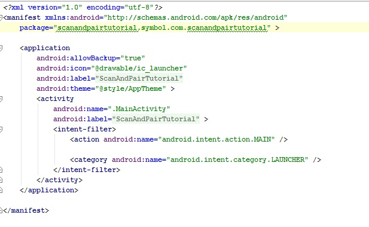
You must first enable permissions for 'com.symbol.emdk.permission.EMDK':
<uses-permission android:name="com.symbol.emdk.permission.EMDK" />Then you must enable the library for EMDK:
<uses-library android:name="com.symbol.emdk" />When done, your manifest.xml should look like:
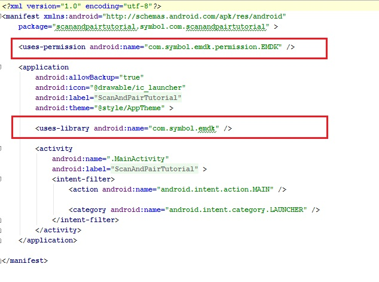
Adding Some Code
Now we will start to add some code.
First you must add references to the libraries:
import com.symbol.emdk.EMDKManager; import com.symbol.emdk.scanandpair.ScanAndPairManager; import com.symbol.emdk.scanandpair.StatusData;Then you must make the activity to implement
EMDKListener.After that you also need to implement
ScanAndPairManager.StatusListener, which is an interface for informing client applications to notify Scan and Pair or Scan and Unpair events. Override itsonStatusfunction. TheonStatusis a callback method that would be called when a scan and pair or unpair status event occurs.public class MainActivity extends Activity implements EMDKManager.EMDKListener, ScanAndPairManager.StatusListener {
}.. .. .. .. .. .. ... @Override public void onOpened(EMDKManager emdkManager) { } @Override public void onClosed() { } @Override public void onStatus(StatusData statusData) { }We will now create some global variables to hold the instance objects of EMDKManager and ScanAndPairManager. These variables would be used throughout the code.
We will then add some UI elements starting with a TextView to display the status of Scan and Pair operation and then EditText that will display the scanned Bluetooth Name/Address of Remote Scanning device or allow user to enter Bluetooth Name/Address of Remote Scanning device with which your Zebra device needs to be paired using Scan and Pair APIs. The UI would have a Spinner that would specify what type of data (Bluetooth Name or Bluetooth Address) of Remote Scanning device, the client application needs to scan prior to pairing with that Remote device. The User Interface would also have two Check Boxes that would be explained later while adding UI code. Of course, the UI will have Buttons to apply settings and start operation of Scan and Pair or Unpair (Note: Bluetooth names are case-sensitive. For successful pairing, device name must be entered exactly as it appears in the device).
// Text View to hold Bluetooth Name of Remote Scanning device to pair with. private EditText btName = null; // Text View to hold Bluetooth Address of Remote Scanning Device to pair with. private EditText btAddress = null; // Select whether to use Hard Scan or Soft Scan option to Scan // Bluetooth Name/Address of Remote Scanning device to pair with. private CheckBox checkboxHardTrigger = null; // CheckBox to indicate whether to perform a scan to get Bluetooth Name/Address of // Remote Scanning device or allow user to enter Bluetooth Name/Address of Remote // Scanning device to pair with. private CheckBox checkBoxAlwaysScan = null; // Button to Pair the client application device with Remote Scanning device. private Button scanAndPairButton = null; // Button to Unpair the client application device with Remote Scanning device. private Button scanAndUnpairButton = null; // Spinner to display type of data (Bluetooth Name/Address) of Remote Scanning // device will be used to pair. private Spinner scandataType = null; // Text view to display status of Scan and Pair or Unpair Operations private TextView statusView = null; // Declare a variable to store EMDKManager object private EMDKManager emdkManager = null; // Declare a variable to store ScanAndPair object ScanAndPairManager scanAndPairMgr = null; // An interface for notifying client applications to notify scan and pair or unpair events. com.symbol.emdk.scanandpair.ScanAndPairManager.StatusListener statusCallbackObj = this;The code till here looks like:
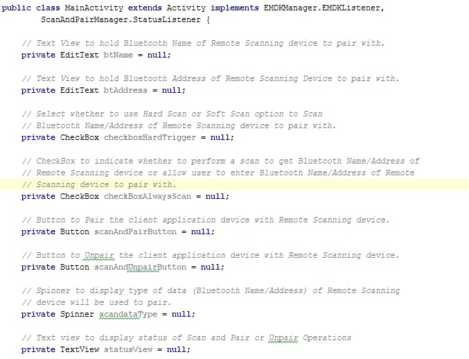 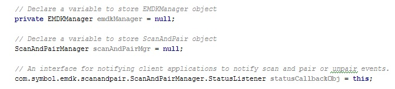
Now, let us design a simple UI that has components explained above.
So, remove all the code, inside "res/layout/activity_main.xml" and add following XML layout code for UI.
<LinearLayout xmlns:android="http://schemas.android.com/apk/res/android" xmlns:tools="http://schemas.android.com/tools" android:layout_width="match_parent" android:layout_height="match_parent" android:orientation="vertical" android:paddingBottom="16dp" android:paddingLeft="16dp" android:paddingRight="16dp" android:paddingTop="@dimen/activity_vertical_margin" tools:context="com.symbol.scanandpairsample1.MainActivity" >
</LinearLayout><LinearLayout android:layout_width="wrap_content" android:layout_height="wrap_content" android:orientation="horizontal" > <TextView android:id="@+id/nameTitle" android:layout_width="119dp" android:layout_height="match_parent" android:text="Bluetooth Name:" /> <EditText android:id="@+id/name" android:layout_width="match_parent" android:layout_height="match_parent" android:singleLine="true" android:hint="MPOS-64001019" android:text="" /> </LinearLayout> <LinearLayout android:layout_width="wrap_content" android:layout_height="wrap_content" android:orientation="horizontal" > <TextView android:id="@+id/addressTitle" android:layout_width="119dp" android:layout_height="match_parent" android:text="Bluetooth Address:" /> <EditText android:id="@+id/address" android:layout_width="match_parent" android:layout_height="match_parent" android:singleLine="true" android:hint="8C:DE:52:12:A2:56" android:text="" /> </LinearLayout> <LinearLayout android:layout_width="wrap_content" android:layout_height="wrap_content" android:orientation="horizontal" > <CheckBox android:id="@+id/alwaysscan" android:layout_width="wrap_content" android:layout_height="wrap_content" android:checked="true" android:text="Always Scan" /> <CheckBox android:id="@+id/triggerType" android:layout_width="wrap_content" android:layout_height="wrap_content" android:checked="true" android:text="Hard Trigger" /> </LinearLayout> <LinearLayout android:layout_width="wrap_content" android:layout_height="wrap_content" android:orientation="horizontal" > <TextView android:id="@+id/scanDataTitle" android:layout_width="119dp" android:gravity="center_vertical" android:layout_height="match_parent" android:text="ScanData Type:" /> <Spinner android:id="@+id/scanDataType" android:layout_width="match_parent" android:layout_height="36dp" /> </LinearLayout> <LinearLayout android:layout_width="match_parent" android:layout_height="wrap_content" android:layout_marginTop="20dp" android:orientation="horizontal" > <Button android:id="@+id/scanandpair" android:layout_width="match_parent" android:layout_height="wrap_content" android:layout_weight="0.5" android:focusable="true" android:text="Pair" > <requestFocus /> </Button> <Button android:id="@+id/scanandunpair" android:layout_width="match_parent" android:layout_height="wrap_content" android:layout_weight="0.5" android:text="Unpair" /> </LinearLayout> <ScrollView android:id="@+id/scrollView1" android:layout_width="match_parent" android:layout_height="match_parent" android:layout_marginTop="20dp" > <TextView android:id="@+id/logs" android:layout_width="match_parent" android:layout_height="wrap_content" android:text="Status:" /> </ScrollView>In the
onCreatemethod, we take reference of UI elements that are declared in "res/layout/activity_main.xml" in order to use them in our Activity. We then call getEMDKManager so that the EMDK can be initialized and checked to see if it is ready. We will then set the ArrayAdapter that has a list of Scan data types of the Remote Scanner device to the Spinner.Finally, we would add methods calls to handle buttons and check boxes events.
// References for UI elements btName = (EditText) findViewById(R.id.name); btAddress = (EditText) findViewById(R.id.address); checkBoxAlwaysScan = (CheckBox) findViewById(R.id.alwaysscan); checkboxHardTrigger = (CheckBox) findViewById(R.id.triggerType); scanAndPairButton = (Button) findViewById(R.id.scanandpair); scanAndUnpairButton = (Button) findViewById(R.id.scanandunpair); statusView = (TextView) findViewById(R.id.logs); scandataType = (Spinner)findViewById(R.id.scanDataType); statusView.setText("\n"); // Initially disable both Bluetooth Name and Address Checkboxes btName.setEnabled(false); btAddress.setEnabled(false); // The EMDKManager object creation and object will be returned in the callback. EMDKResults results = EMDKManager.getEMDKManager(getApplicationContext(), this); // Check the return status of getEMDKManager () if (results.statusCode == EMDKResults.STATUS_CODE.SUCCESS) { statusView.setText("Please wait, initialization in progress..."); } else { statusView.setText("Initialization failed!"); } // Add supported scan types to an ArrayList ArrayList<ScanAndPairConfig.ScanDataType> scanDataTypes = new ArrayList<ScanAndPairConfig.ScanDataType>(); scanDataTypes.add(ScanAndPairConfig.ScanDataType.MAC_ADDRESS); scanDataTypes.add(ScanAndPairConfig.ScanDataType.DEVICE_NAME); scanDataTypes.add(ScanAndPairConfig.ScanDataType.UNSPECIFIED); // Set the scan types list to an Array Adapter and set that Adapter to the Spinner ArrayAdapter<ScanAndPairConfig.ScanDataType> arrayAdapter = new ArrayAdapter<ScanAndPairConfig.ScanDataType>(getApplicationContext(), R.layout.simple_spinner_item, scanDataTypes); scandataType.setAdapter(arrayAdapter); // Method call to register onClick listeners of both Pair and Unpair buttons registerForButtonEvents (); // Method call to register onChecked listener of both checkboxes. addCheckBoxListener();So the complete
onCreatemethod looks like: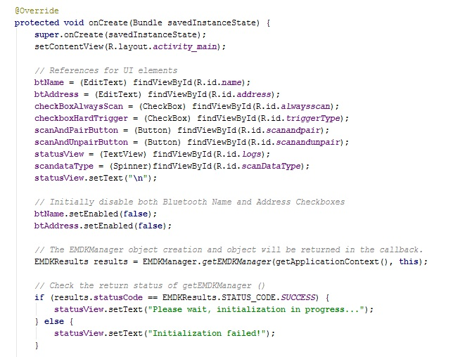 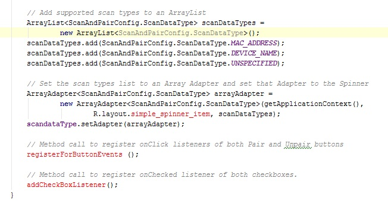
Get the EMDK Manager in the
onOpenedmethod and update theStatusViewTextView with a message by adding following code inonOpenedmethod.// Get EMDK Manager this.emdkManager = emdkManager; // Update StatusView TextView with a message on UI thread runOnUiThread(new Runnable() { @Override public void run() { statusView.setText("Application Initialized."); } });The
onOpenedmethod should look like: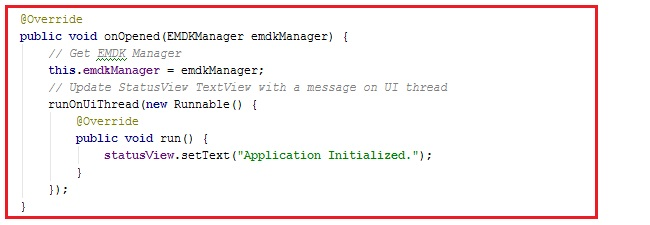
You will see few errors as we have not created the layout for ArrayAdapter and also not created onClick and onChecked listener methods. Let us resolve the errors by first creating the layout for Array Adapter.
So go to res -> layout and add a new file
simple_spinner_item.xmlfile. Add following code to this file.<TextView xmlns:android="http://schemas.android.com/apk/res/android" android:layout_width="wrap_content" android:layout_height="wrap_content" android:textSize="20sp" android:textColor="@android:color/black" android:gravity="center" android:text="Option" />This should look like:
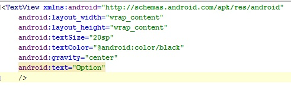
Lets add the
addCheckBoxListenermethod that would handle check box event for "Always Scan" checkbox. If this check box is checked, we will disable the Bluetooth Name and Address EditTexts so that these two parameters can be provided by scanning Remote Scanning device and not by the user. If "Always Scan" check box is unchecked, we will enable the Bluetooth Name and Address EditTexts because user will have to enter these details of Remote Scanning device prior to pairing. This checkbox is related toscanAndPairMgr.config.alwaysScanfield ofScanAndPairAPI that would be explained later.// Listener for Always Scan checkbox private void addCheckBoxListener() {
}checkBoxAlwaysScan.setOnCheckedChangeListener (new CompoundButton.OnCheckedChangeListener() { @Override public void onCheckedChanged(CompoundButton buttonView, boolean isChecked) { if (isChecked) { btName.setEnabled(false); btAddress.setEnabled(false); } else { btName.setEnabled(true); btAddress.setEnabled(true); } } });This method should look like:
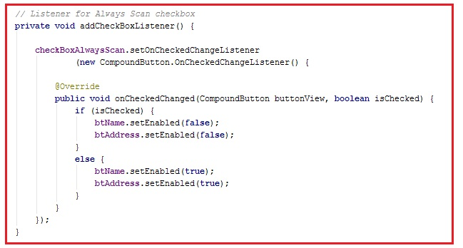
You can still see one error. So lets add
registerForButtonEventsmethod to get rid of this error.registerForButtonEventsmethod containsonClicklistenermethod calls of both "Pair" and "Unpair" buttons.// Method that calls onClick listener methods for Pair and Unpair buttons. private void registerForButtonEvents() { addScanAndPairButtonEvents(); addScanAndUnpairButtonEvents(); }The method looks like:
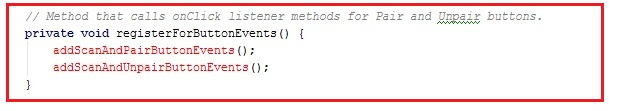
This is the most important part of this tutorial as these two methods would allow you to pair and unpair this client application with remote scanning device. Lets add these two methods starting with
addScanAndPairButtonEvents.First get the
scanAndPairButtonreference, set theonClickListenerand overrideonClickmethod.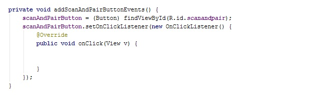
In case of Scan and Pair, we would get an instance of ScanAndPairManager first. On this instance, set the status listener to get the status of Scan and Pair operations.
if(scanAndPairMgr == null) { scanAndPairMgr = (ScanAndPairManager) emdkManager.getInstance(FEATURE_TYPE.SCANANDPAIR);
}if(scanAndPairMgr != null) { scanAndPairMgr.addStatusListener(statusCallbackObj); }We would then set the
scanAndPairMgr.config.alwaysScanparameter. TheScanAndPairManager.config.alwaysScanfield determines if a scan will be performed to get the Bluetooth Name/Address of the Remote device or the user itself has to enter Bluetooth Name/Address to pair with the Remote device.- If ScanAndPairManager.config.alwaysScan is set to true, a scan is always performed when these methods are called. By default it is set to true. So scanning a Bluetooth barcode is required by default.
- If ScanAndPairManager.config.alwaysScan is set to false, then scanning is skipped and the ScanAndPairMgr.config.bluetoothInfo.deviceName or scanAndPairMgr.config.bluetoothInfo.macAddress field provided by the user are directly taken for pairing.
checkBoxAlwaysScancheckbox determines the status ofscanAndPairMgr.config.alwaysScan. Set the Notification Type to indicate the progress ofScanAndPairorScanAndUnpairoperations.scanAndPairMgr.config.alwaysScan = checkBoxAlwaysScan.isChecked(); scanAndPairMgr.config.notificationType = NotificationType.BEEPER; if(!checkBoxAlwaysScan.isChecked()) { scanAndPairMgr.config.bluetoothInfo.macAddress = btAddress.getText().toString().trim(); scanAndPairMgr.config.bluetoothInfo.deviceName = btName.getText().toString().trim(); }Notification Type has a specific beep sequence that lets you know the type of operation with the help of following table:
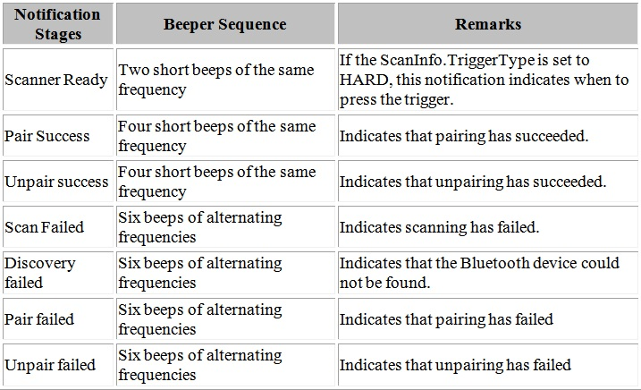
If
checkBoxAlwaysScancheckbox is checked, we would perform a scan to get the Bluetooth Name/Address of the Remote device for pairing. So set the timeout that specifies the duration within which a Bluetooth Barcode should be scanned (Ex. 5 seconds). Later if thecheckboxHardTriggeris checked, we would setTriggerType.HARDas trigger type, else set trigger type asTriggerType.SOFT.scanAndPairMgr.config.scanInfo.scanTimeout = 5000; if(checkboxHardTrigger.isChecked()) { scanAndPairMgr.config.scanInfo.triggerType = TriggerType.HARD; } else { scanAndPairMgr.config.scanInfo.triggerType = TriggerType.SOFT; }Set type of data the application is going to scan (Ex. Bluetooth Name or Bluetooth Address).
scanAndPairMgr.config.scanInfo.scanDataType = (ScanDataType)scandataType.getSelectedItem();Call
scanAndPairmethod and get the result inScanAndPairResults. This is an asynchronous method. The status of the scanAndPair() method will be returned if the callback is registered. If the always scan is enabled in the configuration, this method scans a barcode to get the Bluetooth address or name of a remote device, and pairs with that remote device. If a Bluetooth address is scanned, the remote device is paired without performing a discovery. If a Bluetooth name is scanned, then a discovery is done to find the address of the device and then the pairing is done. The provided authentication PIN is used for pairing. The maximum allowed length for the authentication PIN is 15 characters.ScanAndPairResults resultCode = scanAndPairMgr.scanAndPair("0000");Note: We have provided "0000" as the default value.
Finally, we would update the Status of operations in
statusViewusingScanAndPairResults.if(!resultCode.equals(ScanAndPairResults.SUCCESS)) statusView.append(resultCode.toString()+ "\n\n"); } else { statusView.append("ScanAndPairmanager initialization failed!"); }So thats how we perform ScanAndPair operation of this client application with Remote Scanner device. Following is the entire source code for his method that you can directly copy:
// Method to perform ScanAndPair Operation private void addScanAndPairButtonEvents() { scanAndPairButton = (Button) findViewById(R.id.scanandpair); scanAndPairButton.setOnClickListener(new View.OnClickListener() { @Override public void onClick(View v) {
}); }try { statusView.setText("ScanAndPair started..."+ "\n"); if(scanAndPairMgr == null) { // Get reference to ScanAndPair Manager scanAndPairMgr = (ScanAndPairManager) emdkManager.getInstance (EMDKManager.FEATURE_TYPE.SCANANDPAIR); if(scanAndPairMgr != null) { // Add Status Listener on ScanAndPair Manager scanAndPairMgr.addStatusListener(statusCallbackObj); } } if(scanAndPairMgr != null) { scanAndPairMgr.config.alwaysScan = checkBoxAlwaysScan.isChecked(); // Set Notification to Beeper scanAndPairMgr.config.notificationType = ScanAndPairConfig.NotificationType.BEEPER; // If always scan checkbox is unchecked, get details from EditText if(!checkBoxAlwaysScan.isChecked()) { scanAndPairMgr.config.bluetoothInfo.macAddress = btAddress.getText().toString().trim(); scanAndPairMgr.config.bluetoothInfo.deviceName = btName.getText().toString().trim(); } else { // Else scan these details (Bluetooth Name/Address) scanAndPairMgr.config.scanInfo.scanTimeout = 5000; //Set Trigger Type for Scanning if(checkboxHardTrigger.isChecked()) { scanAndPairMgr.config.scanInfo.triggerType = ScanAndPairConfig.TriggerType.HARD; } else { scanAndPairMgr.config.scanInfo.triggerType = ScanAndPairConfig.TriggerType.SOFT; } // Set Scan data type the user has selected from spinner scanAndPairMgr.config.scanInfo.scanDataType = (ScanAndPairConfig.ScanDataType)scandataType.getSelectedItem(); } // Perform ScanAndPair operation ScanAndPairResults resultCode = scanAndPairMgr.scanAndPair("0000"); // Update the status on StatusView. if(!resultCode.equals(ScanAndPairResults.SUCCESS)) statusView.append(resultCode.toString()+ "\n\n"); } else { statusView.append("ScanAndPairmanager initialization failed!"); } } catch (Exception e) { statusView.setText("ScanAndUnpair Error:"+ e.getMessage() + "\n"); } }The complete
addScanAndPairButtonEventsmethod should now look like: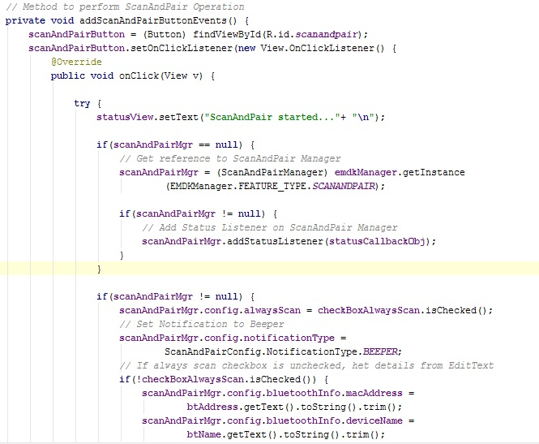 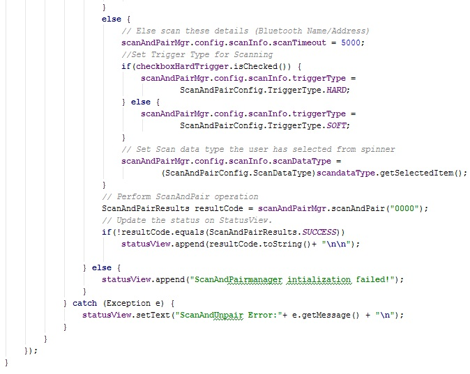
Lets write the
addScanAndUnpairButtonEventsmethod to unpair the client application from your device with the Remote Scanning device (Ex. MC40). This Scan and Unpair method would perform similar steps that were performed in Scan and Pair method explained in previous step except one thing. It would callscanAndUnpairmethod to unpair device with Remote Scanning device as:ScanAndPairResults resultCode = scanAndPairMgr.scanAndUnpair();scanAndUnpairis an asynchronous method and its status will be returned if the callback is registered. If the always scan is enabled in the configuration, this method scans a barcode to get the Bluetooth address or name of a remote device, and unpairs with that remote device. If a Bluetooth address was scanned for pairing during scanAndPair() calls, then the same address can be scanned for unpairing during the ScanAndUnPair() call.This operation would be performed when the user presses
Unpairbutton. Hence we would get the reference ofscanAndUnpairButtonin this method.So the complete source code of this method for unpairing client application with Remote Scanning device would be:
// Method to perform ScanAndUnpair Operation private void addScanAndUnpairButtonEvents() { scanAndUnpairButton = (Button) findViewById(R.id.scanandunpair); scanAndUnpairButton.setOnClickListener(new View.OnClickListener() { @Override public void onClick(View v) {
}); }try { statusView.setText("ScanAndUnpair started..."+ "\n"); if(scanAndPairMgr == null) { // Get reference to ScanAndPair Manager scanAndPairMgr = (ScanAndPairManager) emdkManager.getInstance(EMDKManager.FEATURE_TYPE.SCANANDPAIR); if(scanAndPairMgr != null) { // Add Status Listener on ScanAndPair Manager scanAndPairMgr.addStatusListener(statusCallbackObj); } } if(scanAndPairMgr != null) { scanAndPairMgr.config.alwaysScan = checkBoxAlwaysScan.isChecked(); // Set Notification to Beeper scanAndPairMgr.config.notificationType = ScanAndPairConfig.NotificationType.BEEPER; // If always scan checkbox is unchecked, get details from EditText if(!checkBoxAlwaysScan.isChecked()) { scanAndPairMgr.config.bluetoothInfo.macAddress = btAddress.getText().toString().trim(); scanAndPairMgr.config.bluetoothInfo.deviceName = btName.getText().toString().trim(); } else { // Else scan these details (Bluetooth Name/Address) scanAndPairMgr.config.scanInfo.scanTimeout = 5000; //Set Trigger Type for Scanning if(checkboxHardTrigger.isChecked()) { scanAndPairMgr.config.scanInfo.triggerType = ScanAndPairConfig.TriggerType.HARD; } else { scanAndPairMgr.config.scanInfo.triggerType = ScanAndPairConfig.TriggerType.SOFT; } // Set Scan data type the user has selected from spinner scanAndPairMgr.config.scanInfo.scanDataType = (ScanAndPairConfig.ScanDataType)scandataType.getSelectedItem(); } // Perform ScanAndUnpair operation ScanAndPairResults resultCode = scanAndPairMgr.scanAndUnpair(); // Update the status on StatusView. if(!resultCode.equals(ScanAndPairResults.SUCCESS)) statusView.append(resultCode.toString()+ "\n\n"); } else { statusView.append("ScanAndPairmanager initialization failed!"); } } catch (Exception e) { statusView.setText("ScanAndUnpair Error:"+ e.getMessage() + "\n"); } }The complete
addScanAndUnpairButtonEventsmethod should now look like: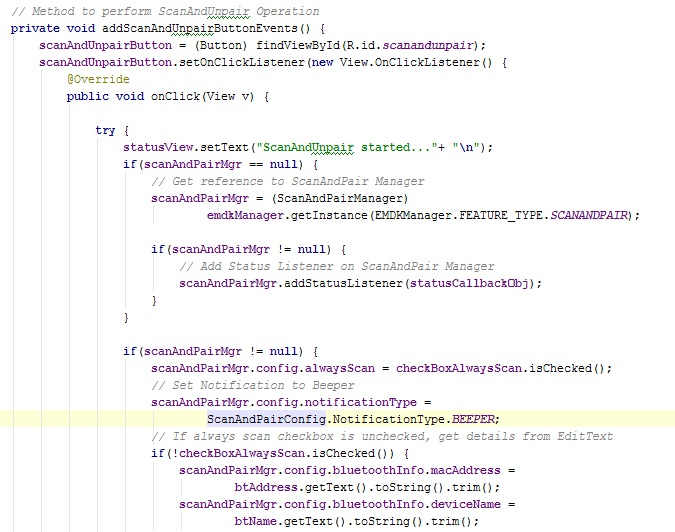 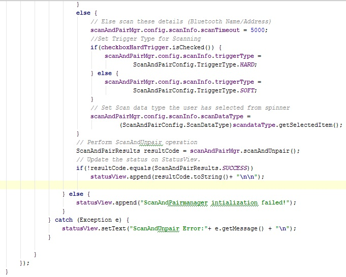
In this step, we would write all the possible status that could be received during ScanAndPair and ScanAndUnpair operations in the
onStatusmethod. We have added status listeners in both ScanAndPair and ScanAndUnpair methods so that we can track different status when these operations are performed and display them onstatusViewto notify user. ThestatusData.getState()method provides all the states we can get during pairing and unpairing operations.Following is the code of
onStatusthat mentions all the states and display them in thestatusViewTextView on the UI thread.// Method to display status during ScanAndPair and ScanAndUnpair operations. @Override public void onStatus(StatusData statusData) {
}final StringBuilder text= new StringBuilder(); boolean isUpdateAddress = false; // Get the status and check with the supported status to display message. switch (statusData.getState()) { // Status Waiting case WAITING: text.append("Waiting for trigger press to scan the barcode"); break; // Status Scanning case SCANNING: text.append("Scanner Beam is on, aim at the barcode."); break; // Status Discovering case DISCOVERING: text.append("Discovering for the Bluetooth device"); isUpdateAddress = true; break; // Status Paired case PAIRED: text.append("Bluetooth device is paired successfully"); break; // Status Unpaired case UNPAIRED: text.append("Bluetooth device is un-paired successfully"); break; // Status Error default: case ERROR: text.append("\n"+ statusData.getState().toString()+": " + statusData.getResult()); break; } // Update Status View with the status on main thread final boolean isUpdateUI = isUpdateAddress; runOnUiThread(new Runnable() { public void run() { statusView.setText(text + "\n"); // Update Bluetooth Name and Address EditTexts if(isUpdateUI) { btName.setText(scanAndPairMgr.config.bluetoothInfo.deviceName); btAddress.setText(scanAndPairMgr.config.bluetoothInfo.macAddress); } } });The
onStatusmethod should look like: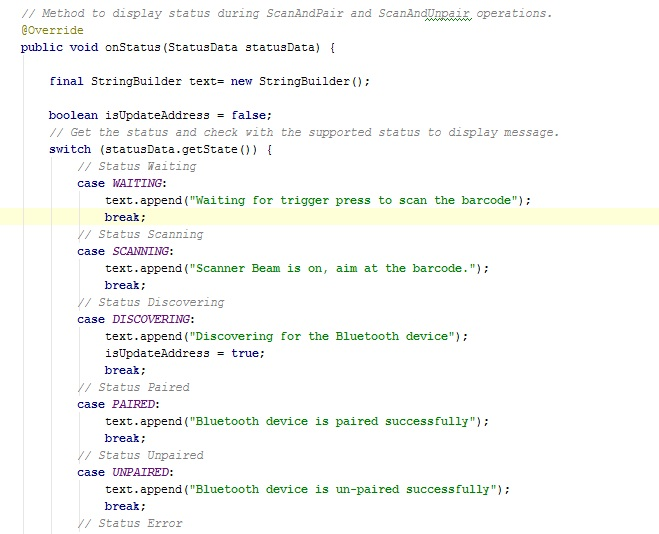 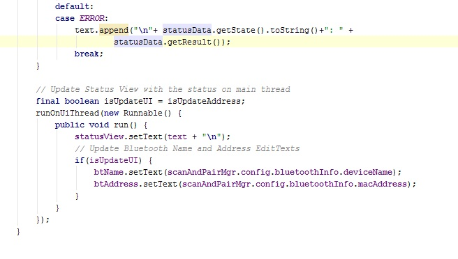
Display an error message on
statusViewTextView in theonClosedmethod using following code:runOnUiThread(new Runnable() { @Override public void run() { statusView.setText("Error!! Restart the application!!"); } });The
onClosedmethod should now look like: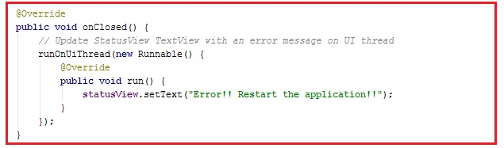
Finally, we would clean up the objects created by EMDK Manager in
onDestroymethod using following code:if (emdkManager != null) { // Clean up the objects created by EMDK manager emdkManager.release(); emdkManager=null; }So the
onDestroymethod should now look like: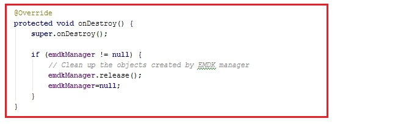
That's it!!! We are done with all the coding part that will let us scan the Bluetooth Name/Address of Remote Scanning device and pair our client application with that Remote device using ScanAndPair APIs. Next is to the application.
Running the Application
Connect the device to a USB port (device must have USB debugging enabled).
Run the application.
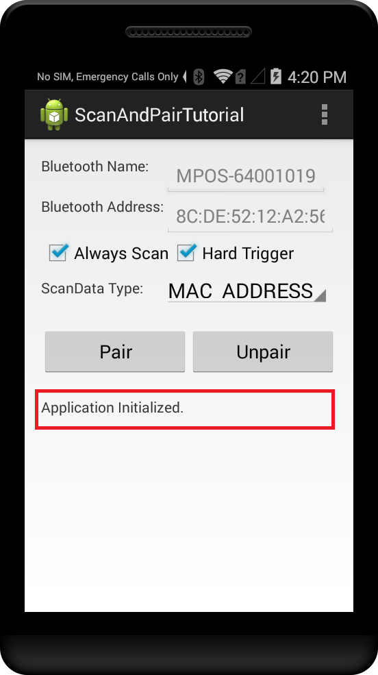
You can see a message on the "StatusView" that indicates EMDK Manager has been successfully initialized.
We want to scan and not type, the Bluetooth Address of Remote Scanning device (Ex. MC40) with which we would pair our device having this client application. So keep the "Always Scan" checkbox checked.
We would scan the Bluetooth Address of Remote Scanning device. So select
MAC ADDRESSoption from "ScanData Type" spinner.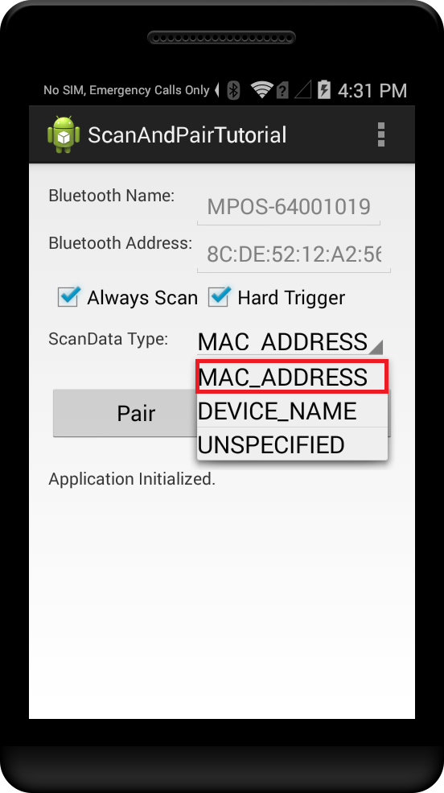
We would scan the Bluetooth Address of Remote Scanning device using Hard Scanner. So keep the "Hard Trigger" checkbox option as checked. So eventually our configuration should look like:
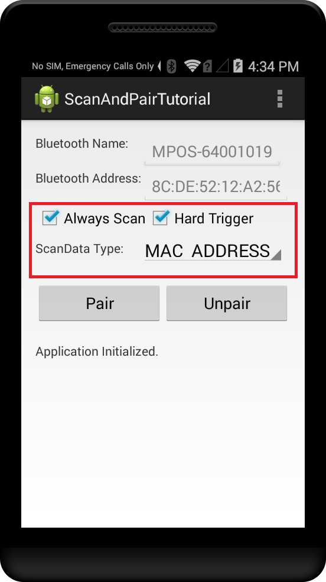
Now press "Pair" button and it would start the pairing process by notifying the intermediate status in the "statusView" TextView.
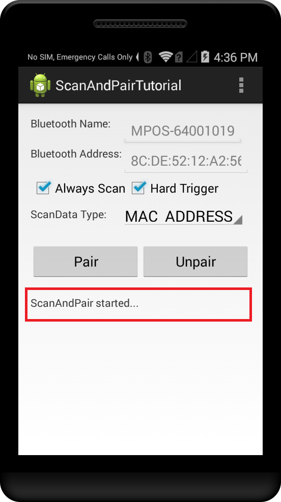
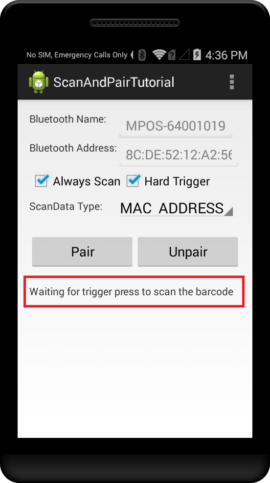
Now press the Hard Scan key to scan Bluetooth Address of the Remote Scanning device.
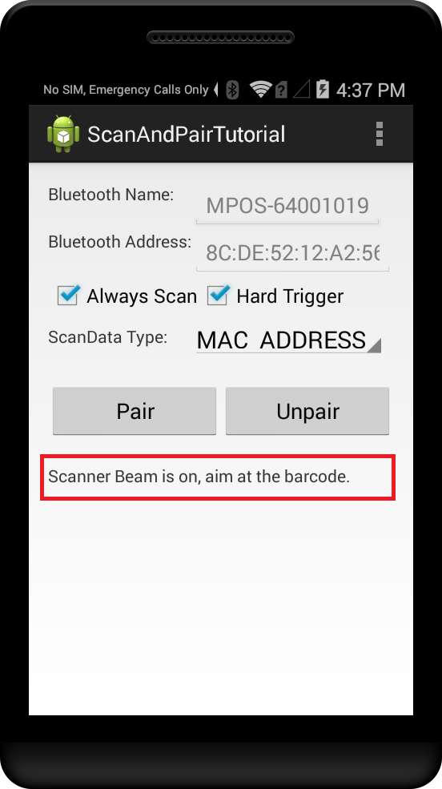
The following is the Barcode that has the MAC Address of Remote Scanning Device (Ex. MC40).
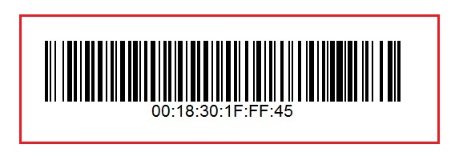
Scan this Barcode and your device (Ex. TC55) would be successfully paired with the Remote Scanning Device (Ex. MC40).
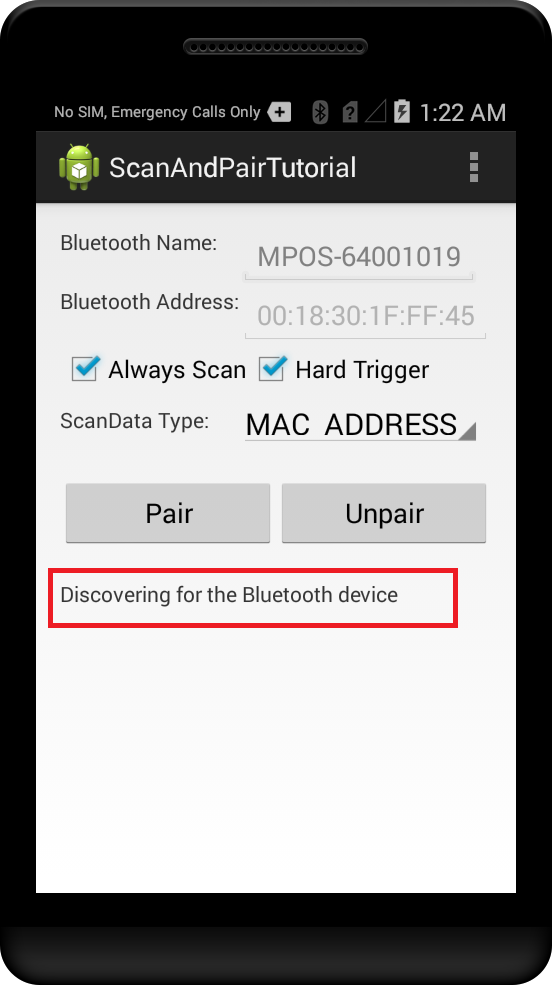
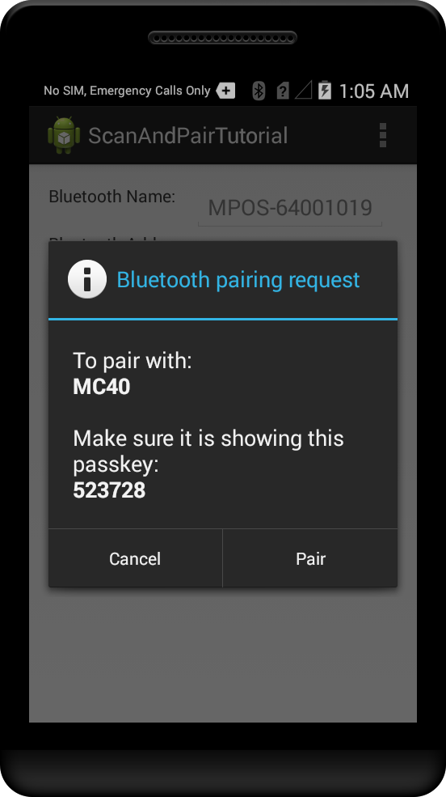
Click "Pair" button on both devices (Mobile and Remote Scanning Device).
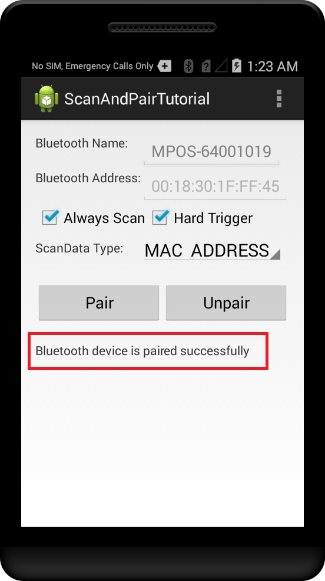
You can see the "statusView" with a success message. Now let's confirm this by going to device's Settings -> Bluetooth.
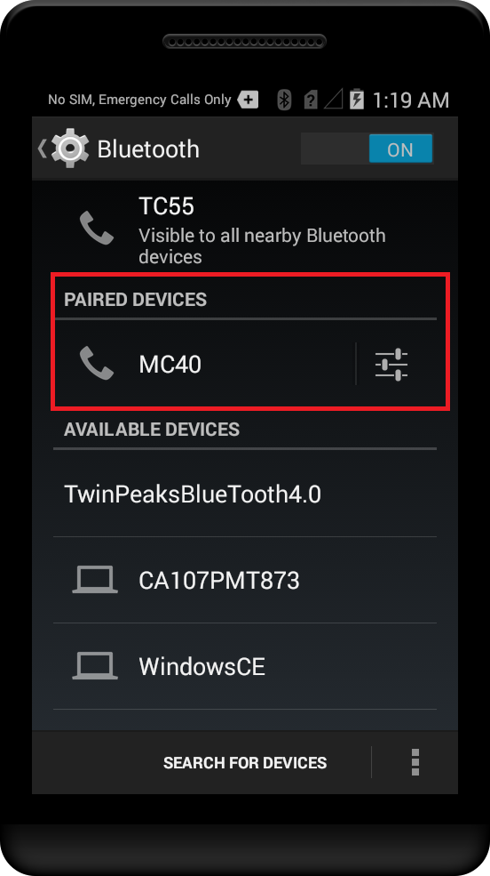
You can see that MC40 has been successfully paired under "PAIRED DEVICES" section of your device.
Important Programming Tips
Perform the following changes in the application's
AndroidManifest.xmlfile://Include the permission for EMDK: <uses-permission android:name="com.symbol.emdk.permission.EMDK"/> //Use the EMDK library: :::xml <uses-library android:name="com.symbol.emdk"/>
What's Next
Now that you have learned how to scan the Bluetooth Name/Address of Remote Scanning device and pair our client application with that Remote device using ScanAndPair APIs, in the next tutorial we would concentrate on SimulScan APIs and develop an application to demonstrate its use.